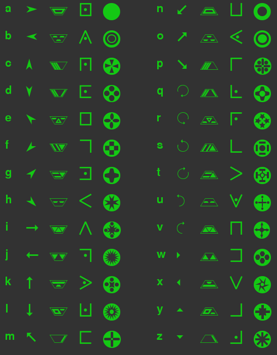
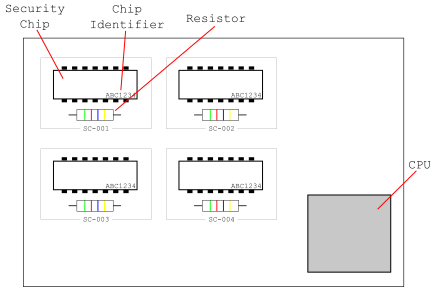

The terminal is a local multiplayer hacking game inspired by "Keep Talking and Nobody Explodes". The aim of the game is to hack into a computer terminal by following the instructions in the hacking manual, before the system locks you out.
Only one person can see and interact with the computer, but is not allowed to view the hacking manual. The other players can view the manual, but are not allowed to see the computer. The two groups must communicate with each other in order to gain access before timer runs out.
It is important that the versions of your game and this manual match. The game version is shown in the bottom right of the screen in the main menu. This manual is for version 0.1 (V0.1) of the game.
When you first start the a game, you will be presented with a terminal, at which you can type commands. Different commands launch different programs which you will need to use to gain access to the system - these programs may be text-based, requiring keyboard input, or graphical, in which case you will use the mouse.
Ultimately, the login command is used to log in to the terminal, and will prompt you for a password or similar form of authentication. On some systems, you will find you cannot execute the login command until other forms of security have been disabled - entering login will give you an idea of what further steps are required.
The help command lists the available commands on each particular terminal - if you get stuck it is a good idea to try working your way through this list. See the next section in this manual for instructions for the different programs you will encounter.
If you wish to exit a program prematurely (i.e. without completing the objective of the program), you may do so by pressing ctrl and c on your keyboard - you can always run it again later.
The sections that follow describe the various tasks you will have to master in order to be a successful hacker. The list below gives links to each task.
We have recovered a shredded list of passwords from a nearby dumpster. Despite our best efforts to piece it back together, it is still hard to make out the passwords. Below are our best guesses for the passwords of each user - perhaps with a bit of extra work you can work which are correct?
You will have a number of attempts to log in before the password is reset. Using our cracked login program, you will be able to see how many characters were correct - the right letter in the right position - for each attempt. You should be able to work out the password using this information.
Inputting the incorrect password too many times will lead to a password reset, and you'll have to start again.
| User | Possible Passwords |
|---|---|
| root | flask, great, force, gleam, brick, flute, blast, feast, flick, flank |
| ro0t | tusks, blush, askew, train, asset, burns, tries, turns, basks, busks |
| rewt | maple, pearl, lapel, myths, cycle, apple, ladle, ample, maize, capel |
| 00142331 | trice, racer, tours, glaze, trail, raise, slick, track, grace, trace |
| 00143231 | court, truce, fords, flirt, cruel, craft, tours, chart, fours, count |
| 01043231 | eagle, ariel, glare, gains, earns, gauge, angle, early, agile, engle |
Some organisations use a visual password system. Users select images to identify themselves, and this selection is then used for authentication. Fortunately for us, people usually pick images based on the things that they like...
The visual login process will present you with four images - three from the user's selected images, and one which was not selected by the user. Use the table below to identify the user based on the images you are presented with, and select the three correct images
Selecting an incorrect image will result in a temporary lockout.
| User | Likes |
|---|---|
| User A | Cars, Cats, Dogs, Planes, Music, Flowers |
| User B | Skateboarding, Horses, Music, Dogs, Food, Wine |
| User C | Books, Computers, Cats, Archery, Boats, Cars |
| User D | Soccer, Basketball, Baseball, Archery, Skateboarding, Tennis |
| User E | Books, Wine, Planes, Computers, Music, Horses |
| User F | Soccer, Tennis, Flowers, Cats, Boats, Archery |
| User G | Food, Wine, Beer, Planes, Basketball, Baseball |
| User H | Cars, Beer, Soccer, Tennis, Food, Computers |
You'll sometimes need to modify the code of programs on the computer you're attempting to gain access to in order to bypass security checks. Brush off your programming skills and open your hex editor...
A program is made up of a number of lines of code, where each line consists of 6 numbers. A hex editor will allow you to modify the lines of code one-by-one, replacing one value in the line with another value. Note that in some cases, you will need to remember the value that you are replacing for following lines.
Follow the rules below in order to determine the correct actions for each line. If you don't follow the instructions below carefully, the system will detect your attempts to modify the program, and revert it to its original state.
Some systems you encounter will have encrypted filesystems, which will need to be unencrypted before you can progress further with a hack. A disgruntled employee at one of the big security firms leaked some of the encryption keys, which should allow you to progress
Our decryption program will present you with a section of encrypted data. Use the table below to enter the correct plain-text data - decryption can then take place based on this information.
Entering the incorrect key will cause data corruption, and recovering from this will waste valuable time.
 Back to topSome of our target devices have hardware security support in the form of on-board expansion chips. These will prevent us from gaining access unless we can somehow disable them. Luckily we were able to 'obtain' a copy of the hardware specifications, which should help you bypass this protection.
Each system may have one or more security chip on its motherboard, with an associated pull-down resistor. In order to bypass the security system, you must remove the chip, its pull-down resistor, or both, based on the information in the below tables. Removing a chip or resistor is achieved by simply left-clicking on it.
Once you have the correct hardware configuration, click the power button to the bottom left of the screen to restart the computer. Booting the system with an incorrect hardware configuration may affect the system clock, which may reduce the amount of time you have before you are logged out.
Table 1: This table shows the values of the different resistors, based on the coloured markings on the resistor.
| Markings | Value |
|---|---|
|
|
10 kOhms |
|
|
20 kOhms |
|
|
30 kOhms |
|
|
40 kOhms |
|
|
50 kOhms |
|
|
60 kOhms |
Table 2: Use the last character of the security chip's identifier and the value of the chip's pull-down resistor to determine the correct action.
| Resistor Value | Odd number | Event number | Zero | Letter |
|---|---|---|---|---|
| 10 kOhms | N | C | R | B |
| 20 kOhms | C | C | B | R |
| 30 kOhms | R | R | C | C |
| 40 kOhms | B | N | R | C |
| 50 kOhms | T3, row 1 | T3, row 4 | N | T3, row 3 |
| 60 kOhms | T3, row 5 | C | T3, row 2 | T3, row 6 |
Table 3: Use the row given by table 2, and the first character of the terminal name to determine the correct action.
| Row | Odd number | Even number | Zero | Letter |
|---|---|---|---|---|
| Row 1 | C | N | R | C |
| Row 2 | R | C | R | C |
| Row 3 | R | B | C | R |
| Row 4 | C | R | C | R |
| Row 5 | N | C | R | B |
| Row 6 | C | C | C | R |
Key:
Some systems obtain login information from a remote authentication server. The easiest way around this is to reconfigure the network so that they are connected to one of our servers instead!
The network manager allows you to make network connections between devices in a network. Each device is represented as a symbol in a grid. Your goal is to use the arrow keys to draw a path from the computer you are attempting to hack (the source, S) to our rogue authentication server (the destination, D). You cannot visit a node in the network grid more than once.
Some networks contain gateway switches (G). When connecting the source to the destination, you must make sure to go through all such switches on the way. Most networks also contain firewalls (x) - our server cannot communicate through these devices and so they must be avoided.
Attempts to configure the network such that it doesn't meet the above requirements will fail, and the network configuration will roll back to its previous state.
Below are some possible network configurations you will encounter. The source and destination devices are identified by IP addresses, which are included with the diagram.
S . . . x x x . . . x x x x G x x x . . . . G . G . . . . . x x x x x D
S . . G x x . . . . x x . x . . x x . . x . G . G . . x . . x x . . . D
S . . G x x . . . . . x . x . . G x . . x . x . G . . . . . x x . . . D
. x D x x . . x . . x . x x x . x x . . . . . . . x x x x . . . . S . G
. x x D x . . x . . x . x x . x x x . . . . . . . x x x x . G . S . . .
D . . . x x . x x . x x . x x G x x . . . . . x x . x x . x x G . . . S
The minehunt game is a poorly written Minesweeper clone, installed on many of our target systems. The aim is to clear all the squares not containing mines, without uncovering a mine. Flags can be placed to mark known mine locations. Winning the game is not your aim here, however: analysis Minehunt's assembly code has revealed that it is possible to gain elavated permissions if certain actions are performed in the right order
To trigger the exploit in the Minehunt game, follow the below steps:
Below are all possible board layouts you may encounter. Use the following key to determine which mines should be flagged, and which should be detonated:
| The location of a mine that should be flagged | |
| The location of the mine that should be detonated |
| . . . . . o . . . . |
| o . . . . . . . . . |
| . . . . . . . . . o |
| . . . o . . . . . . |
| . . . . . . . . . . |
| o x . . . . . o . . |
| . . . . . . . . . . |
| . . . . . . . . o . |
| . . . . . o . . . . |
| o o . . . . . . . . |
| . . . . . . . . . . |
| . . . o . . . . . . |
| . . . . . . . . o . |
| o o . . . . . . x . |
| . . . . . . . . . . |
| . . . . . . . . . o |
| . o . . . o . . . . |
| o o . . . . . . . . |
| . . . . . . . . . . |
| . . . o . . . . . . |
| . . . . . . . . . . |
| o x . . . . . . o . |
| . . . . . . . . . . |
| . o . . o . . . . . |
| o . . . . o . . . |
| . . . . . . . . . |
| . . . . . . . . . |
| . . . x . . . . . |
| . . . . . . . . . |
| o o . . . . . o . |
| . . . . . . . . . |
| . . . . . . . . o |
| o . . . . o . . . |
| o . . . . . . . . |
| . . . . . . . x o |
| . . . o . . . . . |
| . . . . . . . . . |
| o o . . . . . o . |
| . . . . . . . . . |
| . o . . . . . . o |
| o . . . . o . . . |
| . . . . . . . . . |
| . . . . . . . . . |
| . . . o . . . . . |
| . . . . . . . . . |
| o x . . . . . o . |
| o o . . . . . . . |
| . . . . . . . . o |